MALL
Type Design & Collage, 2021.
Custom bubble type and digital collages created for Instagram to promote MALL’s February drop.


Type Design & Collage, 2021.
Custom bubble type and digital collages created for Instagram to promote MALL’s February drop.
Website Design and Development, 2020.
A website to built to showcase the work of Elizabeth Renstrom’s fragrance project, Basenote Bitch. Satirical reviews of retro fragrances are paired with heavily saturated still life homages to the ‘80s, ‘90s and 2000s.
The site features 91 fragrances and counting. The typography is inspired both by contemporary beauty design trends and a spritz of perfume diffusing in the air.
Each fragrance has been given an individual color scheme, which is revealed when hovering over its name on the homepage. The background image on the homepage randomly changes with each visit to the site. “Basenote Bitch” sparkles when hovered over.
 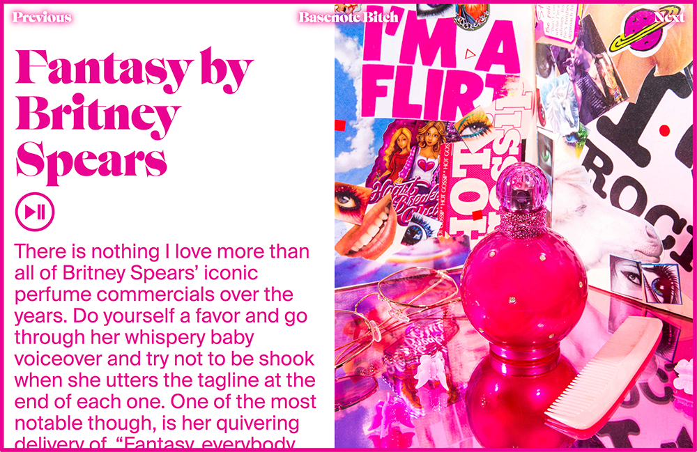
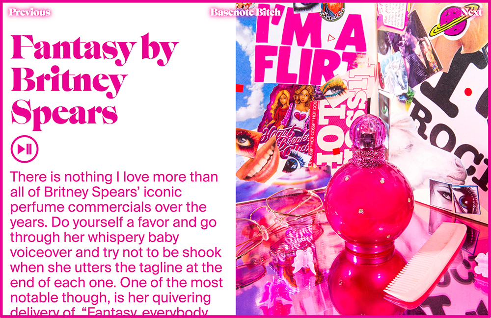


Editorial, 2020.
94 pages, 310x420 mm, unbound.
Editorial design, collage, and type treatments for the premier issue of MARVIN, a large format punk rock “fanzine” magazine by Marvin Scott Jarrett (of Nylon and Raygun). Art directed by Gary Koepke.

 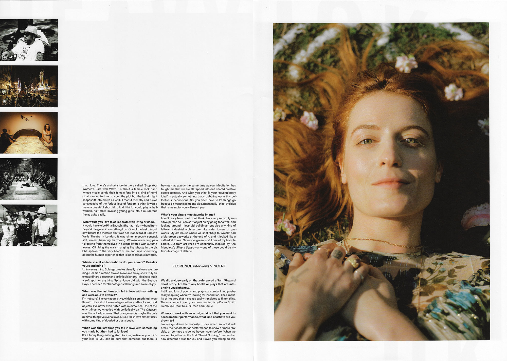
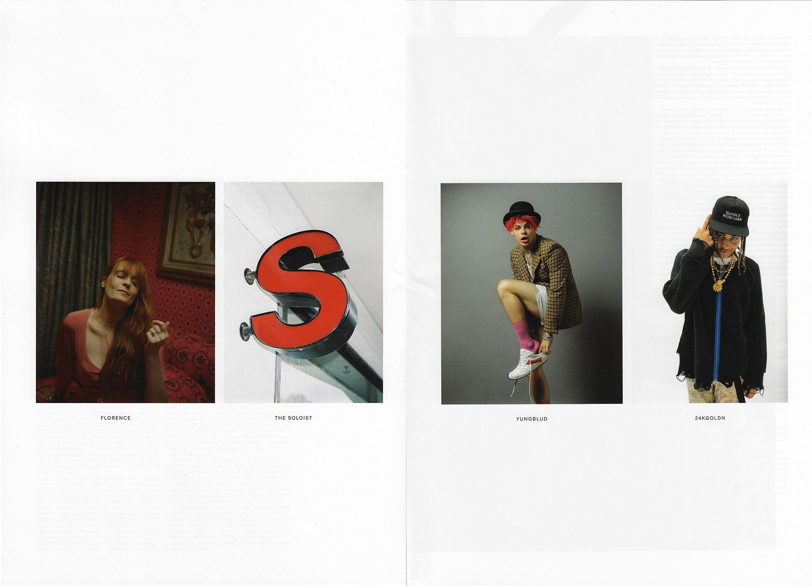
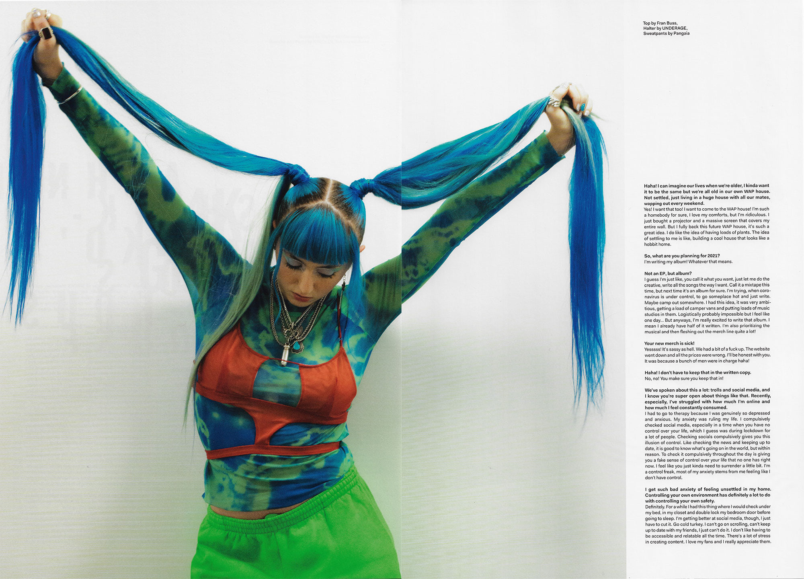
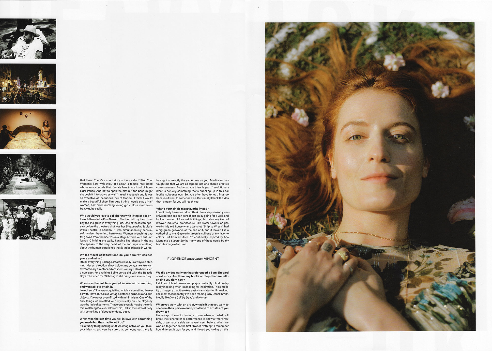
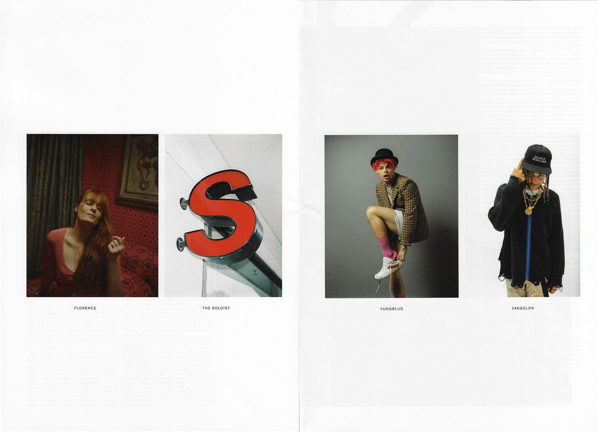
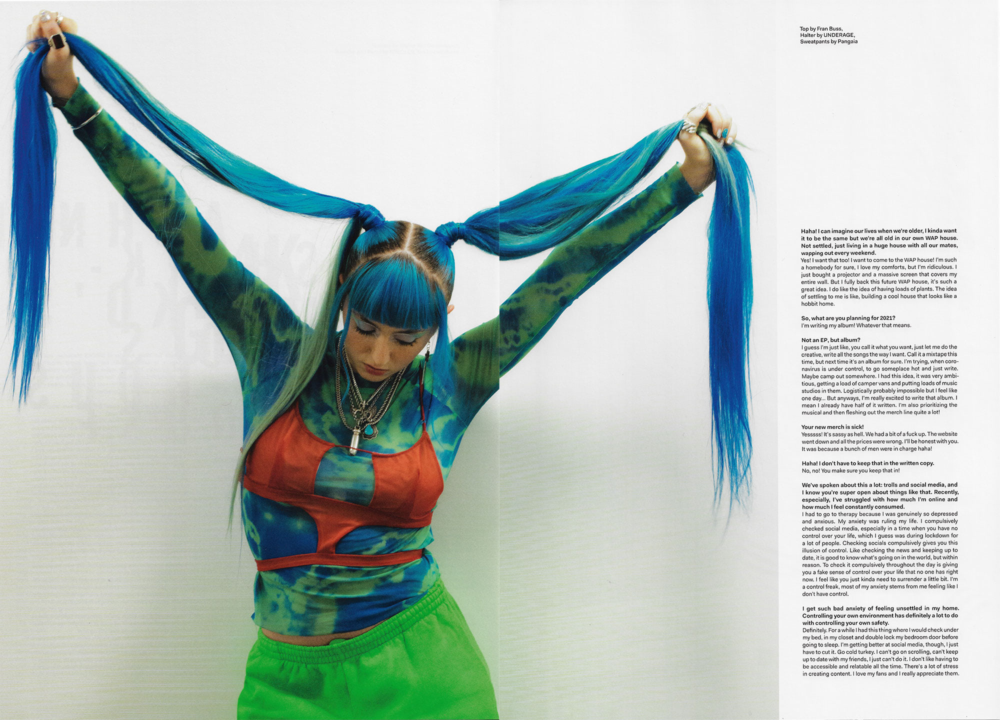


RISD MFA Thesis Book, 2020.
314 pages, 7x10 inches.
Design work, research, and writing around the topics of performative femininity, reality TV paradise, Britney Spears, glitter theory, Dead Girls, and more! Includes an in-depth interview with photographer and New Yorker senior photo-editor Elizabeth Renstrom about her work about teen girls, perfume reviews, and nostalgia.
Thesis Abstract: My appreciation for mainstream pop culture is genuine, but I am not a passive consumer. Drawing from embodied experience and contemporary feminist theory, I design as a participant, cultural surveyor, and critic. From these vantage points, I binge-watch to discern the tropes of media such as reality TV romance and dead girl shows. My data bingeing leads to a process of archiving, de/recoding, and making visible the algorithm structuring pop culture. “Fantasy” is derived from the Greek phantazein, meaning “to make visible.” In this thesis, I demonstrate that the reality-fantasy relationship is not an either/or. Reality TV challenges this notion directly: it is more fantasy than reality. The line between reality and fantasy is further blurred when real women play fantasy dead girls; The plotline may be fictional but the violence against women is a reality. Like binge-watching, Binge fully immerses you in my pop culture world through both critique and celebration.
Advisors: Lucy Hitchcock, Cara Buzzell, Ryan Waller, Alicia Cheng.


 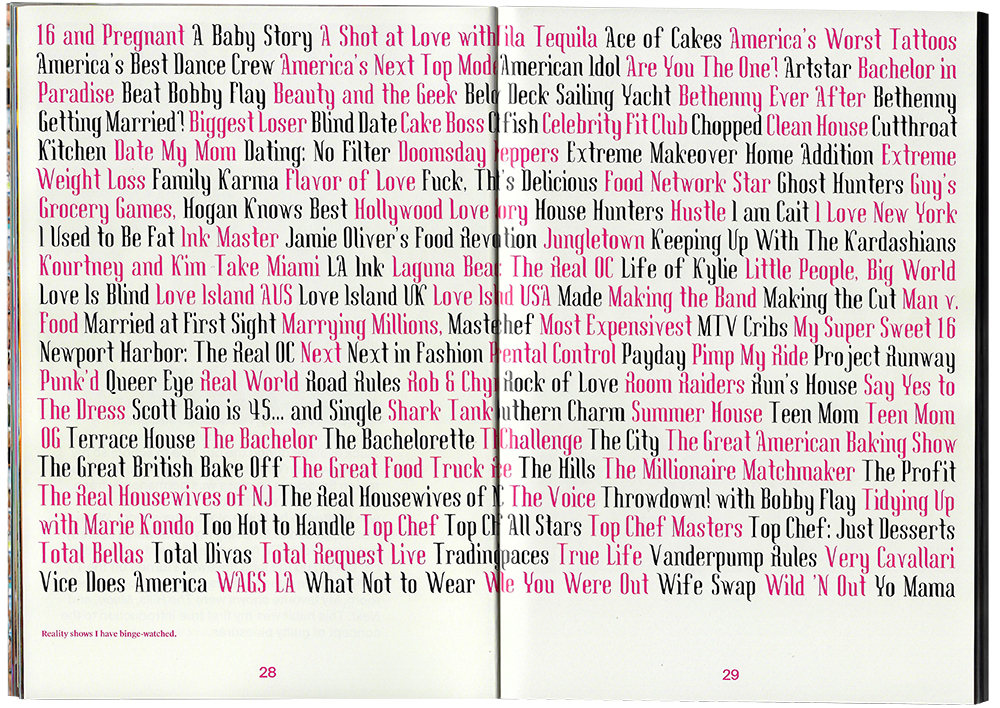
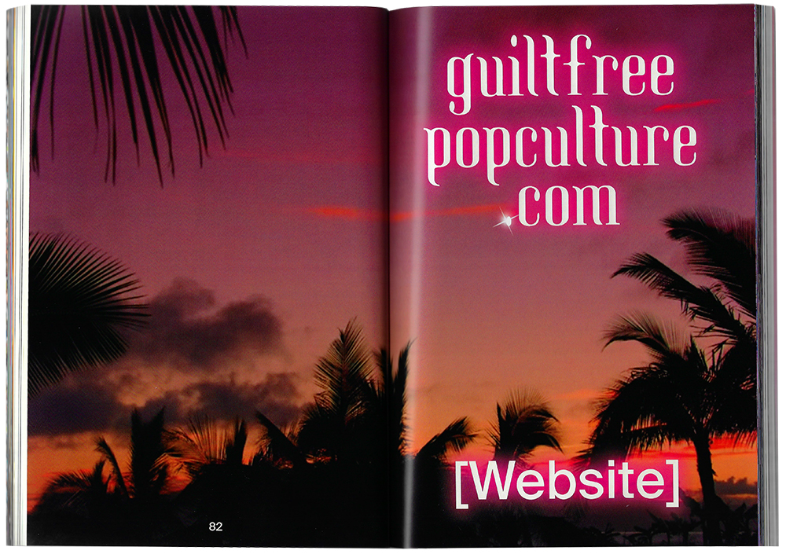
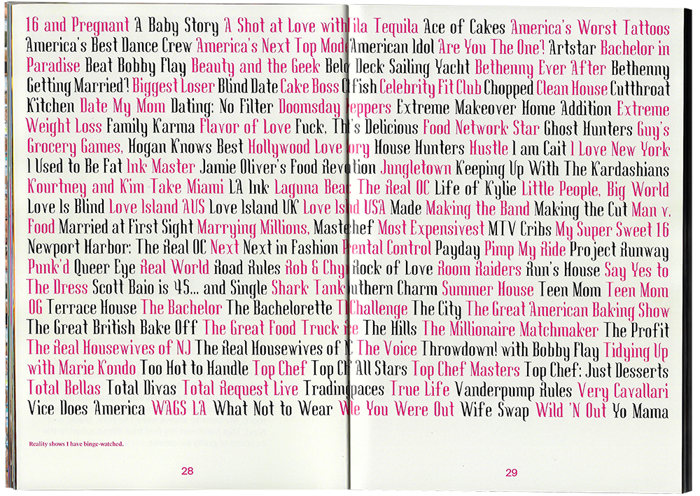
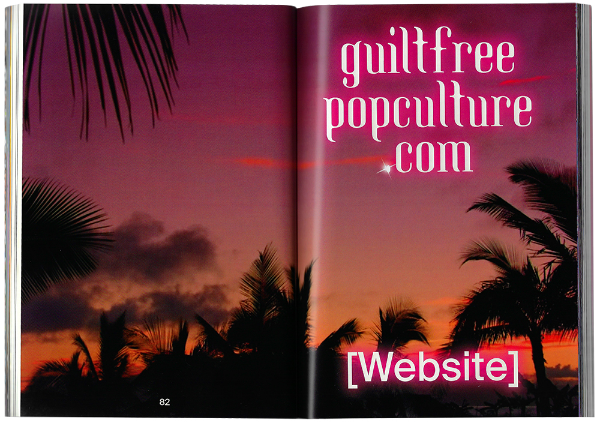


Branding, 2020.
Graphic elements and creative direction for the website and instrgram presence of MALL NYC, an independent online retailer promoting the work of independent artists, designers, and curators who use unique methods, reimagined materials, and vintage pieces.


Website Design and Development, 2020.
This website is a karaoke-like continuous scroll of 41 descriptions of perfumes released by female pop stars including Britney Spears, Shakira, Beyoncé, Ariana Grande, Mariah Carey, J Lo, Taylor Swift, Katy Perry, Rihanna, Lady Gaga, Nicki Minaj, Kylie Minogue, Gwen Stefani, and Christina Aguilera. Each description is also a hyperlink so the user can easily purchase the perfume online.
Every adjective on flirty-sweet-perfect-sensual-fun-confident-feminine-fantasy.com is typeset in a script font, in reference to the typography found on celebrity perfume packaging. This script font changes with each new perfume description, allowing the user to see where one description ends and then next begins. The user can also click on the music note icon to play the karaoke version of the Britney Spears song “Everytime” while the text scrolls.
FLIRTY-SWEET-PERFECT-SENSUAL-FUN-CONFIDENT-FEMININE-FANTASY.COM


 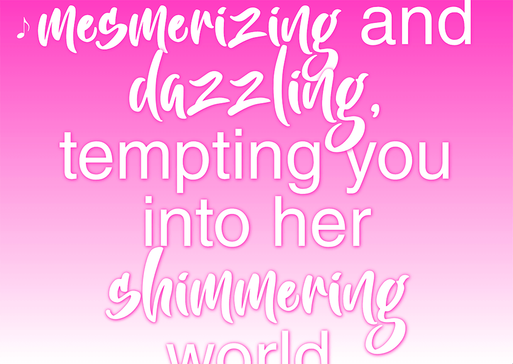
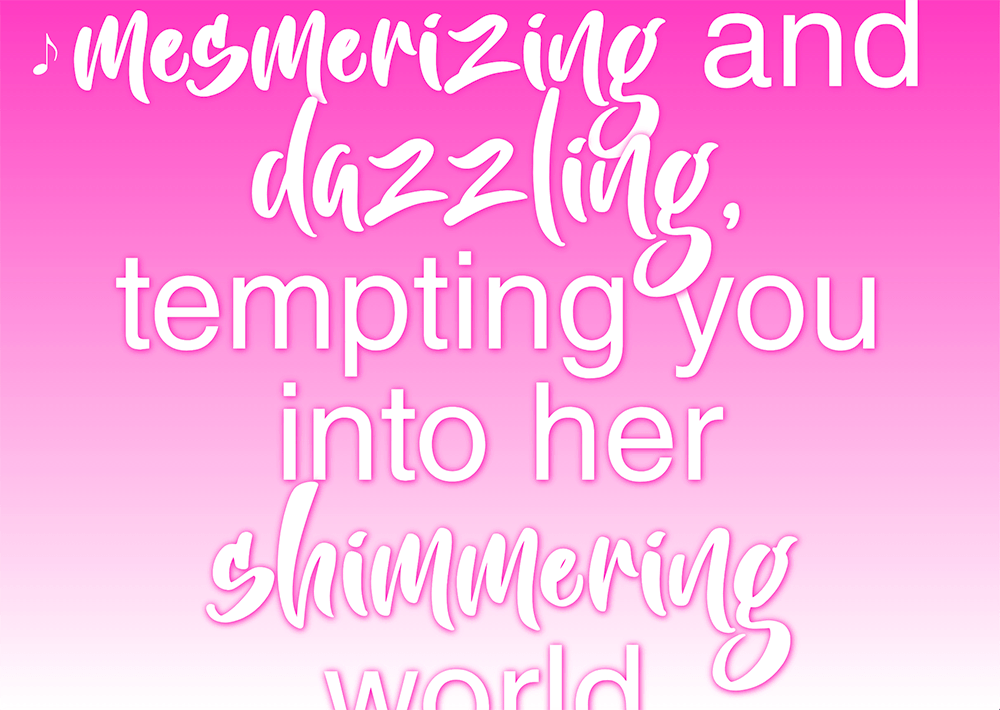
Website Design and Development, 2019.
A digital memorial to/ archive of the 148 women and girls murdered during the first 20 seasons of Law & Order: SVU. The website’s landing page is a gravestone engraved with one of their names at a time. The user must click on the name to advance through all 148 of the murdered women and girls. The SVU opening credits “dun dun” plays with each click. This sound is humorous at first, but quickly becomes grating. Fake flowers rest at the bottom of the page as well as links to individual SVU season pages. Within each season page are gridded screenshots of the Dead Girls killed during that season as well as their names and the titles of the episodes in which they were killed.


Website Design and Development, 2018.
This website playfully proposes that women should not feel guilty about enjoying pop culture. It is designed as a single-page scroll filled with layers of pop culture and junk food floating atop a slowly moving cloudy sky background. Each gif and image is draggable, and the user must sift through these pop culture references in order to read the text beneath. Hovering over the semitransparent bubblegum type makes it become opaque, signaling a link to a relevant external website. There are several Britney Spears gifs scattered throughout the page and, when clicked on, her 1999 hit song “(You Drive Me) Crazy” plays.
It reads: Pop culture is often compared to junk food; something to feel guilty for consuming. But the term “guilty pleasure” is a defense mechanism used to elevate oneself from the disdain for pop culture. Specifically the disdain for mass media geared towards women. Watching reality TV is considered frivolous and shallow, but religiously following a sports team is perfectly respectable. In the words of writer Jaya Saxena, “When men enjoy something, they elevate it. When women enjoy something, they ruin it.” It’s time to stop feeling guilty about enjoying pop culture. Women are socially conditioned to feel guilty about so many things: what we eat, what we wear, saying “no,” feeling guilty, working too much, etc. Pop culture needn’t add to the list.